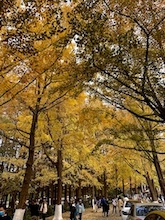

Places to visit
Three Places You Cannot Miss

Badaguan is one of the first famous historical and cultural streets in China and one of Qingdao's main attractions. It is a scenic spot that best reflects the characteristics of Qingdao's "red tiles, green trees, blue sea and blue sky". The so-called "Eight Great Passes" are because about 10 roads have been built in this area, all named after ancient Chinese military passes, including the Zijingguan Road, Ningwuguan Road and Shaoguan Road, which are vertically connected to Hong Kong West Road. Others include Shengguan Road, Jiayuguan Road, Hanguguan Road, Zhengyangguan Road, Linhuaiguan Road, Juyongguan Road and Shanhaiguan Road, which are commonly known as Badaguan Road.
Main streets include: Zijingguan Road (紫荆关路), Ningwuguan Road (宁武关路), Shaoguan Road (韶关路).
The scenery of Badaguan is different in different seasons, with green trees in spring and summer, red maple leaves in autumn, and snow in winter. No matter what season you go, it is one of the places in Qingdao you cannot miss.
Xiaoyu Hill is located north of the east section of Laiyang Road, Qingdao, at the southeast corner of the Yushan campus of the Ocean University of China. The altitude is 60 meters, the area is 2.5 hectares, the green area is 2.1 hectares, and the green area rate is 84%. It is the first classical-style hilltop garden park in Qingdao. There is Yushan Road nearby, hence the name. Qingdao Xiaoyu Mountain is a famous scenic spot with the classical style in Qingdao. It is an important part of the first batch of national scenic spots approved by the state and the first batch of national 4A scenic spots-Qingdao Seaside Scenic Spot. The climate zone to which the scenic spot belongs is a temperate maritime monsoon climate. Due to the influence of seawater, the air is humid, the temperature is moderate, and the four seasons are distinct. In 1934, in order to promote Buddhism, the Buddhist layman Jinyu sponsored the construction of a lecture hall on the top of Xiaoyushan. It was named "Zhanshan Jingshe" as a place for Buddhist laymen to listen to the scriptures. It occupies an area of about 12 acres, with two floors above and below, in the form of an ancient building, with black tiles on top.
Zhongshan Park was built in the early 20th century. This place was originally the site of Huiqian Village, and there were more than 360 villagers in the past, who mostly depended on fisheries for their livelihoods. Across the road from Qingdao Tiantai Stadium is Qingdao’s Zhongshan Park. The park is surrounded by mountains on three sides and faces the sea in the south. The park has lush forests and luxuriant branches and leaves. It is the most distinctive scenic spot in Qingdao's urban vegetation landscape. The park is adjacent to the Taiping Mountain in the east and connects to the Qingdao Botanical Garden. To the north, people can choose to visit Qingdao Zoo and Qingdao Beech Forest Park, and to the west, Baihua Garden is connected to it. About one million square meters of forest and tree gardens and about 40,000 square meters of fruit gardens are built. More than 20,000 cherry blossoms were transplanted from Japan, which became the unique scenery of this garden. Since the place gradually became a park dominated by woods, orchards, flowers and trees, people later named it "Forest Park".
{kind=link}
{kind=link}
{kind=link}